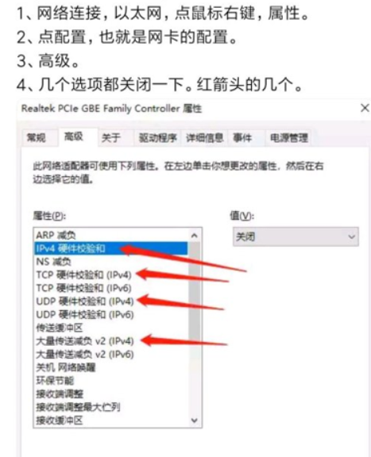
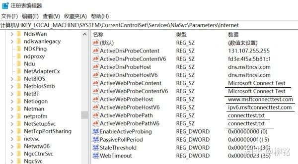
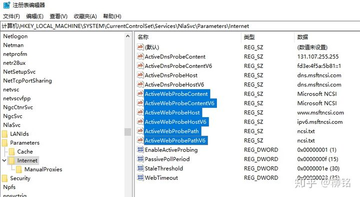

解决Win10更新后网络图标bug
很久之前我自己把我的Win10的更新关闭了，最近发现有新鲜的功能，于是乎就更新了Win10系统，结果就出现了奇怪的问题：
我明明连上了网络，但是右下角的网络还是未连接网络状态，查看相应的以太网连接或者WiFi连接，显示无Internet。对于我这种微强迫症而言，很是难受。
于是就想办法解决……
尝试
一开始，我是通过右键点击网络图标的疑难解答，然后它建议我重置网络，我想可能确实是因为网络缓存的问题，于是就重置了，结果也确实比较满意：能够正常显示了。
但是，最怕的就是但是了，没几天，就又出现类似的问题了，于是我就又开始寻找办法…….
后来，又看到了一种方法，但是并没有效果……这里贴出来展示下。

问题所在
这里粘贴原作者的解析和链接
原因分析：经注册表选项比对，发现问题出在连网返回值功能有了变化。原理是每当连网后，系统会自动向微软的http://dns.msftncsi.com发出请求，然后返回一个NCSI.txt的值，这一值如果正确时，则确认为已连网。而Win10最近的版本中，这个返回服务器和值有了新变化并反映为6个注册表项中。这些变化因国内部分运行商的网络重定向，不能得到正确的反馈，因此出现实际能上网确显示为无internet的问题。
下图中第一张图是出错的注册表项：

第二张是18362版之前正确的注册表项：

其中被选中标成蓝色的项，改回为图中所显示的值，EnableActiveProbing仍恢复为1，重启系统后，网络即能恢复正常，此方法已在多台电脑上测试有效，希望能顺利解决大家的问题！
注册表项具体在：\HKEY_LOCAL_MACHINE\SYSTEM\CurrentControlSet\Services\NlaSvc\Parameters\Internet 之下，请对照图中成值修改！！！